Creación de un cluster
Introducción
Este tema contiene las instrucciones básicas para obtener las características más potentes de un servidor de aplicaciones: la escalabilidad y la recuperación ante fallos. Para ello aprenderemos a configurar un cluster y determinadas características adicionales como un servidor proxy y la replicación de memoria.
Un cluster es una asociación de servidores WebLogic que actúan como si fueran uno solo. Una aplicación desplegada en un cluster es respondida por cada servidor dentro del cluster. Si nuestro sistema observa un aumento en el número de peticiones, podemos incorporar nuevos servidores para soportar dicho aumento. Otra característica, la recuperación ante fallos, es muy importante en sistemas de alta disponibilidad. WebLogic nos va a permitir replicar las sesiones HTTP e incluso los servicios (por ejemplo, JDBC) para que se permita realizar copias de las sesiones en otros servidores. De esta forma, si el servidor que está sirviendo actualmente tiene algún problema o no responde, el servidor que contiene la copia de la sesión puede seguir respondiendo sin necesidad de comenzar una nueva sesión.
Uso del NodeManager
Como ya hemos visto, un servidor de aplicaciones no es más que una instancia de la clase weblogic.Server. El NodeManager es una clase Java que nos va a permitir instanciar otras clases y así poder arrancar los servidores de aplicaciones. En concreto nos va a permitir arrancar servidores administrados uno a uno, todo un cluster o un dominio a la vez. El NodeManager es independiente del servidor de aplicaciones y debemos instanciar uno por cada máquina física que contenga servidores administrados. Recibe peticiones directamente del servidor de administración a través de la consola y puede ser ejecutado como un demonio Unix o un servicio Windows.
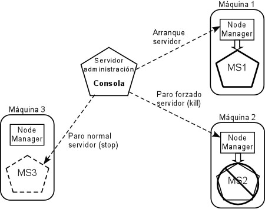
El NodeManager realiza las tareas mostradas en la anterior figura: permite arrancar un servidor que se encuentre en su máquina; forzar su paro (sólo para casos en los que no responda) y pararlo. Esta última opción, la de paro normal, también la puede realizar el servidor de administración directamente.
Para configurar el NodeManager debemos seguir los siguientes pasos:
-
Configurar el NodeManager y arrancarlo en todas las máquinas. Para ello vamos a configurar el script de arranque. En las máquinas de la EPS, debemos quitar el path de Windows, por problemas a la hora de ejecutar. Abrimos el fichero $WEBLOGIC/common/bin/commonEnv.cmd y de la línea que empieza if "%WL_USE_X86DLL%" quitamos la referencia a %PATH%.
Por cuestiones de seguridad, desde la versión 9.0 WebLogic obliga a suscribir cada máquina con el servidor de administración. En este proceso se pretende copiar en cada máquina del dominio los ficheros de configuración necesarios (seguridad, configuración, etc.) para que cuando nos conectemos con el nodemanager, éste tenga los datos necesarios para el arranque. Para realizar esta suscripción vamos a usar una herramienta que proporciona WebLogic, el WLST (WebLogic Scripting Tool). Para arrancar esta herramienta ejecutamos:
java -cp weblogic.jar weblogic.WLST
o bien, si estamos en Windows, en Programas->Bea products->Tools->Weblogic Scripting tool. Nos aparecerá un prompt en el cual podemos introducir comandos:
wls:/offline>
Debemos tener el servidor de administración funcionando (IMPORTANTE: comprobad que la dirección de escucha del servidor de administración es la correcta). Primero nos tenemos que conectar con el servidor de administración, indicando el usuario de administración y su contraseña, así como la dirección de escucha del servidor de adminitración. Después ejecutamos nmEnroll() que realiza la suscripción (copia los ficheros necesarios en la máquina). Esto lo tenemos que ejecutar por cada máquina donde vaya a correr el nodemanager.
ls:/offline> connect('system','weblogic','t3://172.16.33.136:7001') Connecting to weblogic server instance running at t3://172.16.33.136:7001 as username system ... Successfully connected to Admin Server 'admin' that belongs to domain 'prueba1'. Warning: An insecure protocol was used to connect to the server. To ensure on-the-wire security, the SSL port or Admin port should be used instead. wls:/prueba1/serverConfig> nmEnroll() Enrolling this machine with the domain directory at /home/miguel/bea/weblogic90/common/nodemanager/. ... Successfully enrolled this machine with the domain directory at /home/miguel/bea/weblogic90/common/nodemanager/.Ya podemos ejecutar el fichero $BEA_HOME/weblogic92/server/bin/startNodeManager.cmd El NodeManager está funcionando. No es necesario que el NodeManager esté funcionando cuando arrancamos el servidor de administración. Este ejecutable acepta dos parámetros: el nombre del dominio (o dirección IP) en el que estará escuchando y el puerto.
- En dominios de desarrollo es posible que no queramos preocuparnos por la seguridad. En nuestro caso, la EPS tiene un problema en los certificados y tenemos que decir que no realice la comprobación. Para ello, editamos el fichero users_projects/domains/prueba1/bin/startWeblogic.cmd. Casi al final del fichero, en la línea if "%WLS_REDIRECT_LOG%"=="" ( introducimos la siguiente línea antes de -Dweblogic.name: -Dweblogic.security.SSL.ignoreHostnameVerification=true
- Con el NodeManager funcionando, vamos a configurar el servidor de administración para que lo pueda utilizar. Entramos en la consola de administración y pichamos en la máquina donde va a estar el NodeManager. Entramos en la solapa de Configuration y pinchamos en Node Manager. Podemos configurar la dirección de escucha y el puerto (por defecto está el 5555).
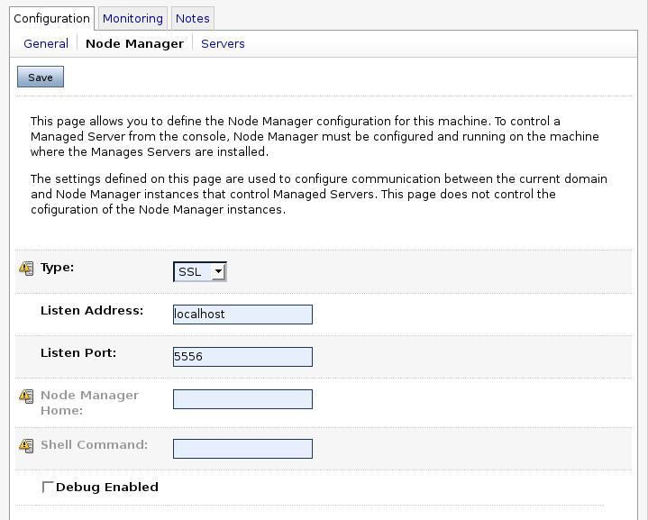
Con el NodeManager configurado ya podemos utilizarlo. En la solapa de Monitoring podemos comprobar si podemos establecer comunicación con el NodeManager de la máquina seleccionada. También podemos consultar el fichero log para detectar posibles fallos.
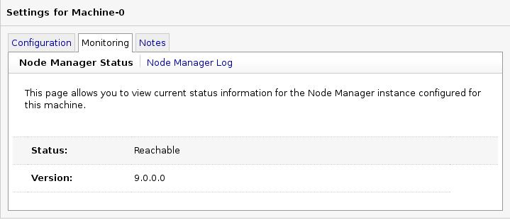
También podemos consultar el log del Node Manager.
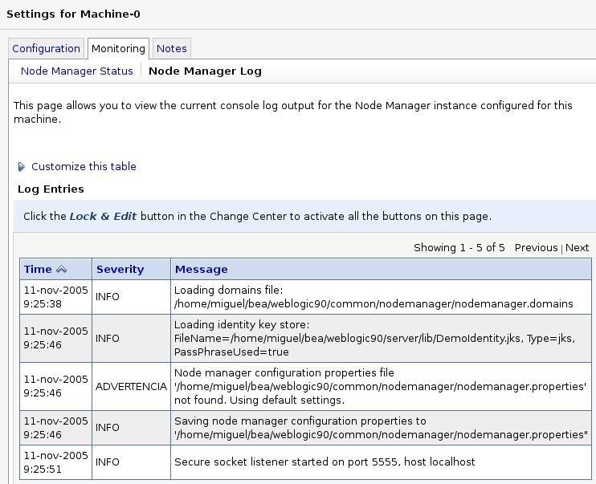
Por cada servidor que querramos arrancar, debemos configurar los datos del arranque remoto. Para ello pinchamos en el servidor y en la solapa de Configuration, en la subsolapa Server Start. La siguiente información hace referencia siempre a directorios de la máquina remota (NOTA: esta información sólo es necesaria si queremos cambiar estos datos con respecto a la configuración del propio nodemanager):
- Java Home: directorio donde tenemos instalado Java (/home/j2ee/bea/jdk...)
- BEA Home: directorio donde tenemos instalado BEA (/home/j2ee/bea)
- Root Directory: directorio de trabajo del servidor. Podemos utilizar el mismo nombre de dominio dentro del directorio users_projects. (/home/j2ee/bea/users_projects/midominio)
- Class Path: aquí podemos pasarle el classpath al comando Java. Como mínimo debemos añadir el fichero weblogic.jar que se encuentra en $BEA_HOME/weblogic90/server/lib/weblogic.jar.
- Arguments: argumentos adicionales para el comando Java. Al menos -Xms32m -Xmx32m que indican la cantidad mínima y máxima de memoria a utilizar.
- Security Policy File: fichero de política de seguridad utilizado por Weblogic. Por defecto podemos usar el fichero: $BEA_HOME/weblogic90/server/lib/weblogic.policy
- Username: el nombre de usuario para arrancar el servidor.
- Password: contraseña. Debemos indicarle la contraseña asociada al usuario.
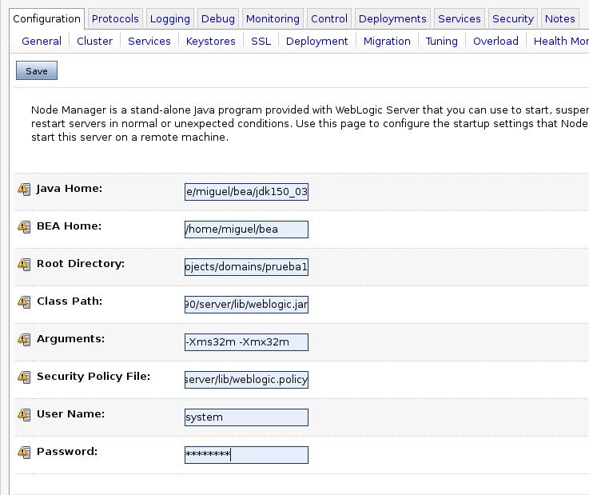
Para arrancar un servidor a través del NodeManager, seleccionamos el servidor que queramos arrancar y pinchamos en la solapa Control ->Start/Stop. Nos aparecerá la figura mostrada más abajo en la cual podemos poner en marcha el servidor (o servidores), pararlo, rearrancarlo o suspenderlo.
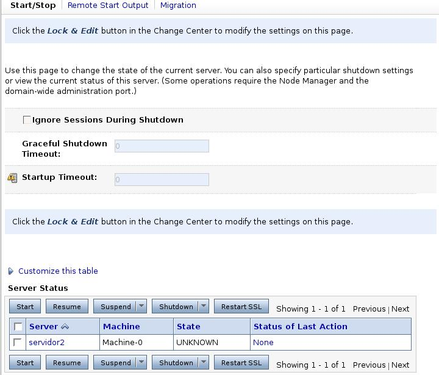
Para comprobar si realmente se ha arrancado, nos vamos a la solapa de Monitoring y veremos si se ha arrancado. Tened en cuenta que tardará un tiempo en arrancar. También podemos comprobar el log del NodeManager o la salida estándar del propio NodeManager.
Por último, si queremos que el NodeManager se arranque cuando se encienda la máquina, debemos indicar al sistema operativo que lo haga. Vamos a detallar cómo se puede arrancar en Linux. Vamos a utilizar el fichero /etc/rc.local En este fichero vamos a añadir un par de líneas que arrancarán el NodeManager. Las líneas a añadir serán:
su - miguel -c "cd /home/weblogic/bea/weblogic90/server/bin; ./startNodeManager.sh &"
El comando su permite cambiar de usuario. Aquí cambiamos a miguel que es quien ha instalado el servidor de aplicaciones. Con la opción -c indicamos que ejecute un comando que es el que viene a continuación, cambiando al directorio indicado y ejecutando el NodeManager. También podemos hacer lo mismo con el servidor de administración, utilizando el siguiente comando:
su - miguel -c "cd /home/weblogic/bea/users_projects/domains/MiDominio; ./startWebLogic.sh &"
Para hacerlo en Windows tenemos que crear servicios que llamen a los comandos indicados
Configuración básica de un cluster
Para configurar un cluster pinchamos en Environment->Cluster, luego en Lock and Edit y en New.
En la siguiente figura debemos empezar a configurar el cluster. Damos el nombre y la dirección y el puerto de multicast.
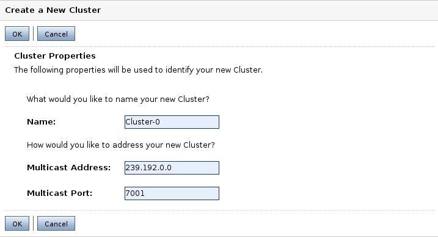
Una vez creado vamos a ver las opciones que podemos configurar. Pinchamos sobre el nombre del cluster recién creado. La primera opción que aparece nos permite configurar tres cosas:
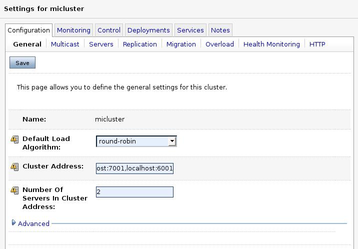
-
Default Load Algorithm: es el algoritmo de carga a utilizar. Este
algoritmo permite el balanceo de la carga (peticiones). Los posibles algoritmos son:
- Round-Robin. La primera petición se asigna al primer servidor, la segunda al segundo y así sucesivamente hasta que se sobrepasa el último y se vuelve a empezar.
-
Weight-based. Este algoritmo permite balancear la carga ponderando
el peso de cada servidor. Utilizando el campo Cluster Weight (ver
siguiente figura) podemos asignar un determinado peso al servidor, para
así permitir que servidores en máquinas más potentes
respondan a más peticiones. Si, por ejemplo, asignamos a un servidor
un peso 1, a otro 2 y a otro 3, el algoritmo asigna una petición
al primer servidor, las dos siguientes al segundo y las tres siguientes
al tercero.
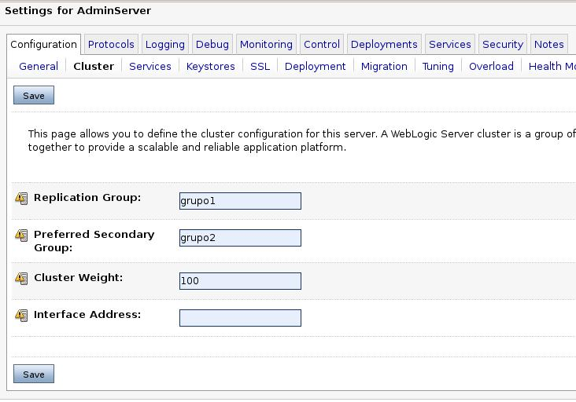
- Random. Elige el siguiente servidor de manera aleatoria.
- Cluster Address: son las distintas direcciones (url:puerto) que participarán en el cluster, separadas por comas.
En la siguiente solapa debemos chequear la dirección de multicast. El multicast permite la comunicación entre los servidores del cluster. Por defecto es la mostrada en la siguiente figura (el puerto por defecto es también el 7001). Si queremos chequear si funciona la dirección podemos hacer uso de una utilidad de WebLogic. Desde dos sesiones distintas del sistema operativo tecleamos el siguiente comando:
java -cp $BEA_HOME/weblogic92/server/lib/weblogic.jar utils.MulticastTest -N mensaje -A dirección
donde mensaje es el mensaje que se enviará desde a la dirección de multicast y dirección es la dirección multicast a utilizar. Ponemos mensajes distintos en cada sesión y debemos recibir los dos mensajes. Si nuestra máquina dispone sólo del bucle local (localhost) es posible que nos de algún error al intentar conectarnos con la dirección de multicast. Podemos utilizar el siguiente comando para añadir la dirección de multicast al dispositivo lo.
route add -net 237.0.0.1 netmask 255.0.0.0 dev lo
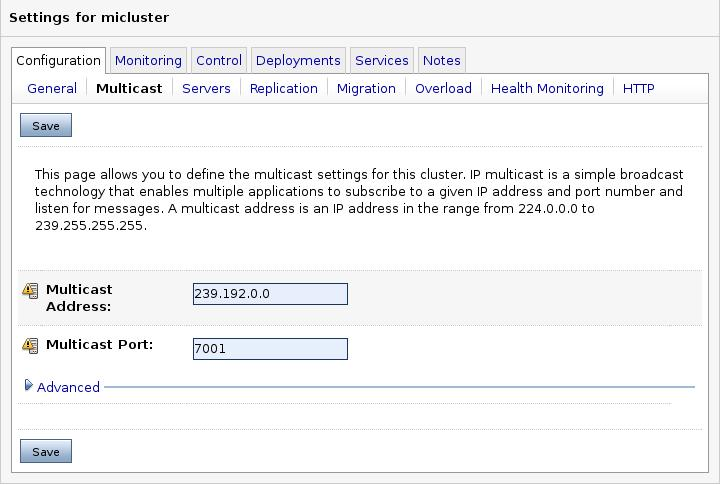
Pasamos a la solapa Servers donde podemos ver los servidores que participarán en el cluster. Para asignar un servidor a un cluster, tenemos que añadirlos desde esta opción o bien entrar uno a uno en cada servidor e indicarle en Configuration->General a qué cluster está asignado. Los servidores deben estar parados para poder asignarlos al cluster. La siguiente figura muestra dónde tenemos que indicar el cluster al que pertenece el servidor.
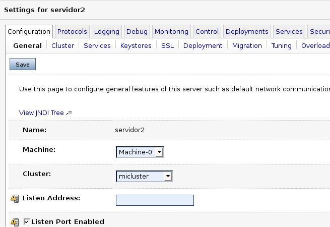
La siguiente figura muestra el listado de servidores que contiene este cluster.
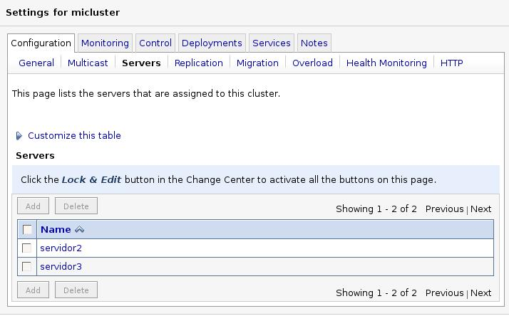
En la solapa Monitoring podemos saber el estado de los servidores configurados para el cluster. En Control podemos arrancar y parar servidores pertenecientes a este cluster.
Para desplegar una aplicación al cluster (y así que todos los servidores del cluster respondan a la aplicación) debemos asignar la aplicación al cluster. Simplemente, cuando estemos desplegando la aplicación y nos diga dónde desplegarla, nos aparecerá una ventana como la siguiente, donde, además de los servidores disponibles en el dominio, tendremos el cluster. Podemos seleccionar todos los servidores de un cluster o algunos de ellos. Es muy importante no desplegar la misma aplicación a un cluster y además a un servidor que forme parte del cluster.
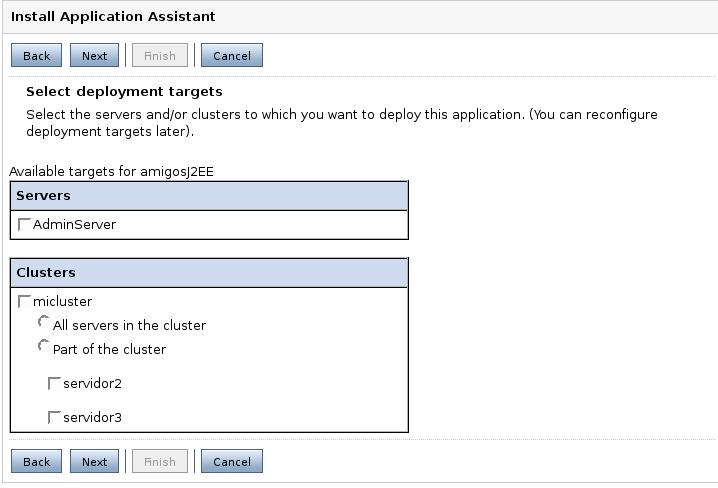
De la misma forma que en el despliegue podemos controlas los servicios (última solapa) que están asignados al cluster.
Configuración de un servidor proxy
Una vez creado el cluster como se indicaba en el apartado anterior ya lo tenemos disponible para su utilización. Sin embargo, cada servidor tiene su propia dirección IP, por lo que si tenemos una aplicación desplegada en el cluster, ¿a qué dirección IP debe direccionar el cliente su petición?. Podemos pedir a un servidor (que pertenezca al cluster) en concreto y éste responderá, pero perderemos el balanceo de carga. Para solucionar este problema se suele insertar un servidor proxy HTTP entre el cluster y el cliente. Este servidor proxy lo podemos hacer con un servidor de aplicaciones que tendrá asociada una aplicación que se encargará de realizar el balanceo de carga. También se puede utilizar otro servidor proxy (como Apache) o incluso un proxy hardware. En esta sección vamos a ver cómo podemos configurar un servidor proxy haciendo uso de una utilidad que incorpora Weblogic. Esta utilidad no es más que una clase que implementa un servlet para realizar el balanceo de carga.
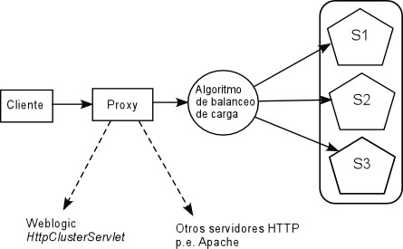
Lo primero a realizar es la creación de un servidor de aplicaciones, al que llamaremos proxy. Vamos a asociar una aplicación a este servidor de aplicaciones. Para ello vamos a crear una aplicación vacía, que contendrá sólo el fichero de descripción de aplicación (web.xml) el cual utilizará un servlet de Weblogic y el descriptor de WebLogic (webogic.xml). Creamos un fichero web.xml que contendrá la siguiente información:
<!DOCTYPE web-app PUBLIC "-//Sun Microsystems, Inc.//DTD Web Application 2.3//EN" "http://java.sun.com/j2ee/dtds/web-app_2_3.dtd"> <web-app> <servlet> <servlet-name>HttpClusterServlet</servlet-name> <servlet-class> weblogic.servlet.proxy.HttpClusterServlet </servlet-class> <init-param> <param-name>WebLogicCluster</param-name> <param-value> localhost:6001:6002|localhost:5001:5002 </param-value> </init-param> </servlet> <servlet-mapping> <servlet-name>HttpClusterServlet</servlet-name> <url-pattern>/</url-pattern> </servlet-mapping> <servlet-mapping> <servlet-name>HttpClusterServlet</servlet-name> <url-pattern>*.jsp</url-pattern> </servlet-mapping> <servlet-mapping> <servlet-name>HttpClusterServlet</servlet-name> <url-pattern>*.htm</url-pattern> </servlet-mapping> <servlet-mapping> <servlet-name>HttpClusterServlet</servlet-name> <url-pattern>*.html</url-pattern> </servlet-mapping> </web-app>
Este fichero de descripción consta de las siguientes partes:
- El nombre del servlet y la clase que lo implementa. Hacemos referencia a la clase weblogic.servlet.proxy.HttpClusterServlet.
- El primer parámetro inicial identifica los servidores que forman parte del cluster. Debemos indicar cada uno de los servidores que forman parte del cluster de la siguiente manera: nombre:puerto:puerto_seguro nombre puede ser la dirección DNS o IP del servidor y a continuación ponemos el puerto y el puerto seguro del servidor. Para poner varios servidores los separamos con el símbolo | . El siguiente parámetro DebugConfigInfo es útil en modo desarrollo y proporciona información para depuración de errores.
- Debemos indicar el mapeado del servlet a patrones URL. En este caso hemos mapeado las extensiones jsp, htm, html, así como "/" que indica que cualquier petición que no pueda resolver el proxy se reenvía hacia los servidores del cluster.
El fichero weblogic.xml contendrá la siguiente información:
<!DOCTYPE welogic-web-app PUBLIC "-//BEA Systems, Inc.//DTD Web Application 9.0//EN" "http://www.bea.com/servers/wls90/dtd/weblogic90-web-jar.dtd"> <weblogic-web-app> <context-root>/</context-root> </weblogic-web-app>
Aquí le estamos diciendo que esta aplicación es la aplicación por defecto del servidor, por lo que no será necesario poner /proxyApp para que responda a la aplicación.
Una vez creados estos ficheros creamos un directorio WEB-INF y movemos el fichero web.xml dentro de este directorio. Para crear la aplicación web utilizamos el siguiente comando:
jar cf proxyApp.war WEB-INF/*
donde proxyApp.war es el nombre que le hemos dado a la aplicación. Debemos desplegar la aplicación dentro de nuestro dominio y asociarla al servidor proxy.
Configuración de la replicación de memoria
La última característica por configurar es la recuperación ante fallos. Cuando un cliente realiza una petición a un servidor, se crea una instancia de la sesión. Si un servidor se viene abajo (ya sea por problemas técnicos o por desconexión por mantenimiento de la máquina) y está dando servicio a un determinado cliente, la sesión HTTP, los servicios EJB y toda la memoria asociada a ese cliente se pierde. Para solucionar este problema, WebLogic permite configurar la replicación de memoria. La replicación de memoria nos permite especificar dónde van a ser almacenadas las copias de las sesiones. Vamos a trabajar con grupos de replicación, que son una agrupación lógica de servidores relacionados en un cluster. Lo recomendable es que los servidores en la misma máquina estén en el mismo grupo de replicación. Cuando se crea una sesión, WebLogic crea una réplica de la sesión y la envía a otro servidor siguiendo este orden de preferencia:
- Primero trata de encontrar un servidor que no esté en su misma máquina y que pertenezca a su grupo secundario preferido.
- Si ningún servidor cumple lo anterior, trata de buscar un servidor que pertenezca a su grupo secundario preferido aunque no esté en otra máquina.
- La tercera opción es que el servidor no pertenezca a su grupo secundario preferido, pero resida en otra máquina.
- La última opción es que ni pertenezca a su grupo preferido ni resida en otra máquina.
Para definir los servidores en un grupo de replicación y en el secundario, debemos definir, en cada servidor, a qué grupo pertenecen. El nombre de los grupos nos definimos nosotros. Pinchando en el nombre del servidor que queramos configurar y yendo a la opción de Configuration -> Cluster.
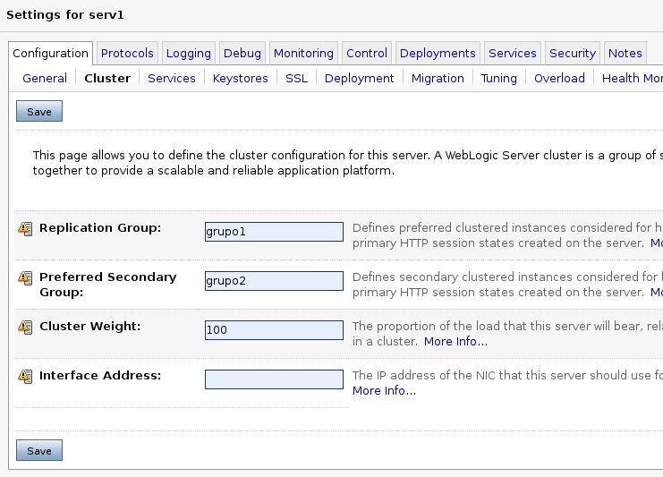